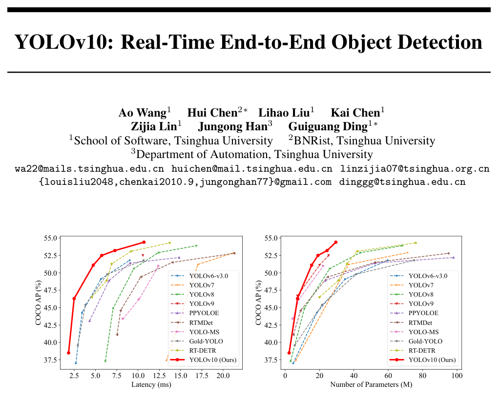
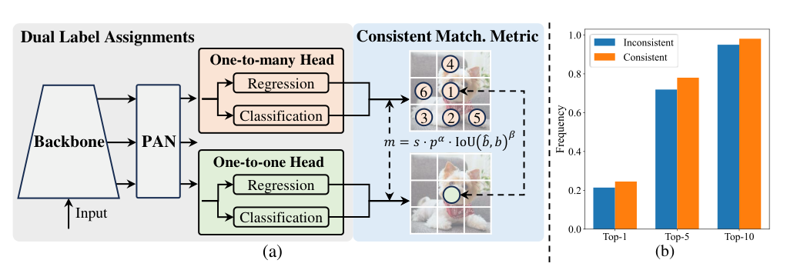
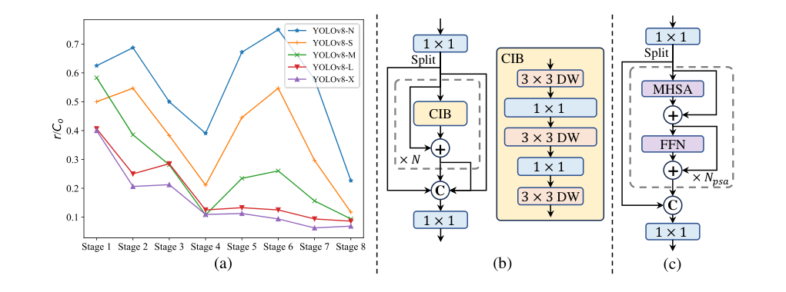
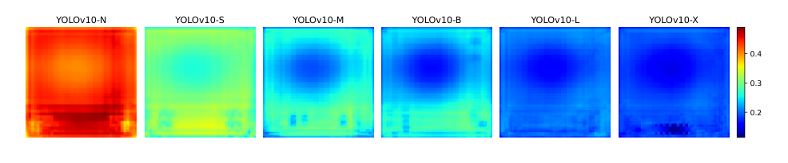
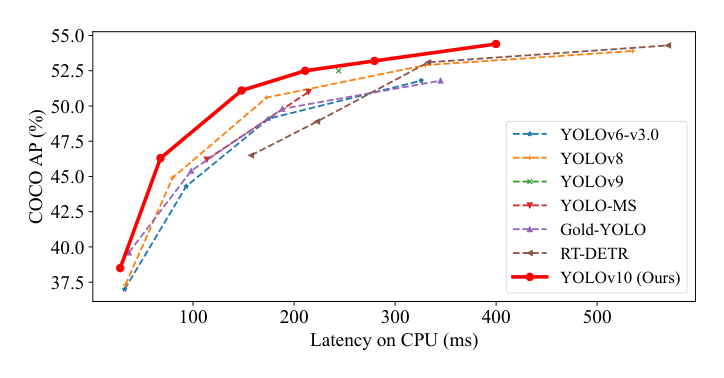
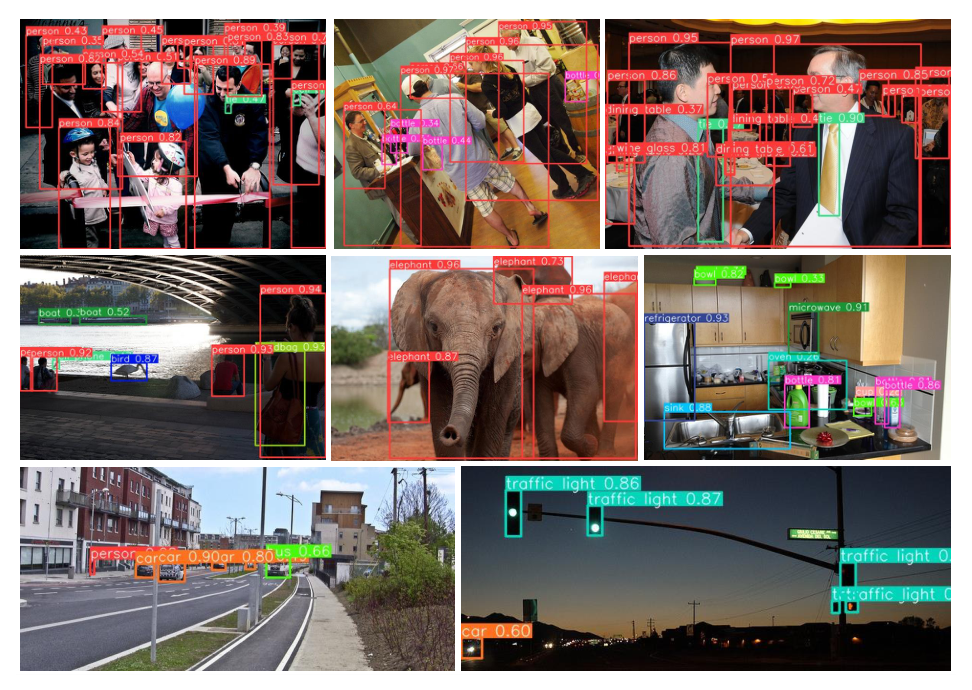

YOLOv10: 실시간 종단간 객체 탐지
YOLOv10: Real-Time End-to-End Object Detection
YOLOv10은 기존 YOLO 계열 객체 탐지기의 두 가지 고질적 병목인 후처리 비최대 억제(NMS) 의존성과 모델 아키텍처 내 연산 중복성을 동시에 해결하여, 실시간 종단간(Real-Time End-to-End) 객체 탐지의 성능-효율성 한계를 한 단계 끌어올린 차세대 모델입니다.
- NMS-free 학습을 위한 일관된 이중 할당(Consistent Dual Assignments): 학습 시에는 풍부한 지도 신호를 제공하는 일대다(One-to-Many) 헤드와 추론 시 NMS가 불필요한 일대일(One-to-One) 헤드를 함께 학습하되, 일관된 매칭 지표(Consistent Matching Metric)로 두 헤드 간의 지도 격차(Supervision Gap)를 최소화합니다. 추론 시에는 일대다 헤드를 제거하여 추가 연산 비용 없이 종단간 추론을 수행합니다.
- 총체적 효율성-정확도 기반 모델 설계(Holistic Efficiency-Accuracy Driven Model Design):
- 효율성 중심 설계: 경량 분류 헤드(Lightweight Classification Head), 공간-채널 분리 다운샘플링(Spatial-Channel Decoupled Downsampling), 랭크 기반 블록 설계(Rank-Guided Block Design with CIB)를 통해 불필요한 파라미터와 FLOPs를 대폭 감축했습니다.
- 정확도 중심 설계: 소형 모델 대상 대형 커널 합성곱(Large-Kernel Convolution, 7×7)과 최소 비용으로 전역 문맥을 포착하는 부분 자기주의(PSA, Partial Self-Attention) 모듈을 도입했습니다.
- 주요 벤치마크 성과 (COCO val): YOLOv10-N/S/M/B/L/X 전 스케일에서 SOTA 성능과 지연 시간 트레이드오프를 달성했습니다. 예컨대 YOLOv10-S는 유사한 AP(46.3% vs. 46.5%)에서 RT-DETR-R18 대비 1.8× 빠른 추론 속도와 2.8× 적은 파라미터/FLOPs를 기록했고, YOLOv10-B는 YOLOv9-C와 동일한 52.5% AP에서 지연 시간 46% 감소 및 파라미터 25% 절감을 달성했습니다.
초록 (Abstract)
지난 수년간 YOLO 계열 모델은 연산 비용과 탐지 성능 사이의 효과적인 균형 덕분에 실시간 객체 탐지(Real-Time Object Detection) 분야의 지배적인 패러다임으로 자리매김해 왔다. 연구자들은 YOLO의 아키텍처 설계, 최적화 목적 함수, 데이터 증강(Data Augmentation) 전략 등을 꾸준히 탐구하여 괄목할 만한 발전을 이루어 왔다. 그러나 후처리 단계에서 비최대 억제(NMS, Non-Maximum Suppression)에 의존하는 구조는 YOLO의 종단간(End-to-End) 배포를 저해하고 추론 지연 시간(Inference Latency)에 악영향을 미친다. 또한, YOLO 내부의 다양한 구성 요소 설계에 대한 포괄적이고 철저한 점검이 부족하여 상당한 연산 중복성(Computational Redundancy)이 발생하고 모델의 표현력이 제한된다. 이는 차선의 효율성으로 이어지며 성능 개선의 여지를 크게 남겨 두고 있다.
본 연구에서는 후처리(Post-Processing)와 모델 아키텍처 양쪽 측면에서 YOLO의 성능-효율성 경계를 한층 더 확장하고자 한다. 이를 위해 먼저 YOLO의 NMS-free 학습을 위한 일관된 이중 할당(Consistent Dual Assignments) 기법을 제안하여 경쟁력 있는 성능과 낮은 추론 지연 시간을 동시에 달성한다. 나아가 YOLO를 위한 총체적 효율성-정확도 기반 모델 설계(Holistic Efficiency-Accuracy Driven Model Design) 전략을 도입한다. 효율성과 정확도 관점 모두에서 YOLO의 다양한 구성 요소를 종합적으로 최적화함으로써 연산 오버헤드를 크게 줄이고 모델 역량을 강화한다. 이러한 노력의 결실로 실시간 종단간 객체 탐지를 위한 새로운 세대의 YOLO 시리즈인 YOLOv10을 선보인다. 광범위한 실험 결과, YOLOv10은 다양한 모델 스케일에 걸쳐 최첨단(State-of-the-Art) 성능과 효율성을 달성함을 입증하였다. 예를 들어, COCO 데이터셋에서 YOLOv10-S는 유사한 AP 조건에서 RT-DETR-R18보다 1.8× 더 빠르며 파라미터 수와 FLOPs는 2.8× 더 적다. 또한 YOLOv10-B는 YOLOv9-C 대비 동일한 성능에서 지연 시간을 46%, 파라미터 수를 25% 줄였다. 코드와 모델은 https://github.com/THU-MIG/yolov10에 공개되어 있다.
1. 서론 (Introduction)
실시간 객체 탐지는 컴퓨터 비전 분야에서 항상 핵심적인 연구 주제였으며, 낮은 지연 시간 내에 이미지 속 객체의 범주(Category)와 위치(Position)를 정확히 예측하는 것을 목표로 한다. 이는 자율 주행(Autonomous Driving), 로봇 내비게이션(Robot Navigation), 객체 추적(Object Tracking) 등 다양한 실제 응용 분야에 폭넓게 활용되고 있다. 최근 몇 년간 연구자들은 실시간 탐지를 달성하기 위해 CNN 기반 객체 탐지기(Object Detector) 설계에 집중해 왔으며, 그중에서도 YOLO 계열은 성능과 효율성 간의 뛰어난 균형으로 인해 점차 큰 인기를 얻었다. YOLO의 탐지 파이프라인은 모델 순전파 과정(Forward Process)과 NMS 후처리의 두 부분으로 구성된다. 하지만 이 두 부분 모두 여전히 결함을 지니고 있어 최적의 정확도-지연 시간 경계를 달성하지 못하고 있다.
구체적으로, YOLO는 학습 과정에서 하나의 정답 객체(Ground-Truth Object)에 여러 개의 양성 샘플(Positive Sample)을 대응시키는 일대다(One-to-Many) 레이블 할당 전략을 주로 사용한다. 이 방식은 우수한 성능을 이끌어내지만, 추론 시 최적의 양성 예측을 선별하기 위해 반드시 NMS를 거쳐야 한다. 이로 인해 추론 속도가 느려지고 성능이 NMS 하이퍼파라미터에 민감해져, YOLO가 진정한 의미의 최적 종단간 배포를 달성하는 데 걸림돌이 된다. 이 문제를 해결하기 위한 한 가지 접근법은 최근 도입된 종단간 DETR(DEtection TRansformer) 아키텍처를 채택하는 것이다. 예를 들어 RT-DETR은 효율적인 하이브리드 인코더(Hybrid Encoder)와 불확실성 최소화 쿼리 선택(Uncertainty-Minimal Query Selection)을 제안하여 DETR을 실시간 응용 영역으로 끌어올렸다. 그럼에도 불구하고 배포 시 모델의 순전파 과정만 놓고 비교하면 DETR의 효율성은 여전히 YOLO 대비 개선의 여지가 있다. 또 다른 접근법은 CNN 기반 탐지기에서 종단간 탐지를 모색하는 것으로, 주로 일대일(One-to-One) 할당 전략을 통해 중복 예측을 억제한다. 그러나 이러한 방식들은 대개 추가적인 추론 오버헤드를 유발하거나 YOLO에서 차선의 성능에 그치는 한계가 있다.
나아가 모델 아키텍처 설계 역시 YOLO의 정확도와 속도에 지대한 영향을 미치는 근본적인 과제로 남아 있다. 보다 효율적이고 효과적인 아키텍처를 구축하기 위해 연구자들은 다양한 설계 전략을 탐구해 왔다. 백본(Backbone)에서는 특징 추출 능력을 높이기 위해 DarkNet, CSPNet, EfficientRep, ELAN 등 다양한 기본 연산 단위가 제안되었으며, 넥(Neck)에서는 다중 스케일 특징 융합(Multi-Scale Feature Fusion)을 강화하기 위해 PAN, BiC, GD, RepGFPN 등이 연구되었다. 또한 모델 스케일링(Model Scaling) 전략과 재파라미터화(Re-parameterization) 기법도 활발히 검토되었다. 이러한 노력들이 눈에 띄는 진전을 이루었음에도, 효율성과 정확도 양면에서 YOLO의 각 구성 요소에 대한 포괄적인 점검은 여전히 부재한 상태다. 그 결과 YOLO 내부에는 상당한 연산 중복성이 잔존하여 비효율적인 파라미터 활용과 차선의 효율성을 초래하고 있다. 게다가 이로 인해 제약된 모델 역량은 성능 저하로 이어져 정확도 향상에 상당한 잠재력을 남기고 있다.

본 연구에서는 이러한 문제들을 해결하고 YOLO의 정확도-속도 경계를 한 단계 더 전진시키고자 하며, 탐지 파이프라인 전반에 걸쳐 후처리와 모델 아키텍처를 모두 겨냥한다. 이를 위해 첫째, 이중 레이블 할당(Dual Label Assignments)과 일관된 매칭 지표(Consistent Matching Metric)를 결합한 NMS-free YOLO를 위한 일관된 이중 할당 전략을 제시하여 후처리 과정의 중복 예측 문제를 해결한다. 이를 통해 모델은 학습 중 풍부하고 조화로운 지도를 받는 동시에 추론 시 NMS의 필요성을 제거하여 높은 효율성과 경쟁력 있는 성능을 모두 확보한다. 둘째, YOLO의 다양한 구성 요소를 포괄적으로 점검하여 아키텍처를 위한 총체적 효율성-정확도 기반 모델 설계 전략을 제안한다. 효율성 측면에서는 경량 분류 헤드(Lightweight Classification Head), 공간-채널 분리 다운샘플링(Spatial-Channel Decoupled Downsampling), 랭크 기반 블록 설계(Rank-Guided Block Design)를 제안하여 명백한 연산 중복성을 줄이고 더 효율적인 아키텍처를 구현한다. 정확도 측면에서는 대형 커널 합성곱(Large-Kernel Convolution)을 탐구하고 효과적인 부분 자기주의(Partial Self-Attention, PSA) 모듈을 제시하여 적은 비용으로 모델의 표현력을 높이고 성능 향상의 잠재력을 이끌어낸다.
이러한 접근법을 바탕으로 YOLOv10-N / S / M / B / L / X의 다양한 모델 스케일을 갖춘 새로운 실시간 종단간 탐지기 패밀리를 성공적으로 구축하였다. 객체 탐지의 표준 벤치마크인 COCO 데이터셋에서의 광범위한 실험은 YOLOv10이 모든 모델 스케일에 걸쳐 연산-정확도 트레이드오프 측면에서 기존 최첨단 모델들을 크게 능가함을 입증한다. 그림 1에서 확인할 수 있듯이, YOLOv10-S와 YOLOv10-X는 유사한 성능 하에서 각각 RT-DETR-R18과 R101보다 1.8× 및 1.3× 더 빠르다. YOLOv9-C와 비교하면 YOLOv10-B는 동일한 성능으로 지연 시간을 46% 단축한다. 더욱이 YOLOv10은 매우 높은 파라미터 활용 효율을 보여준다. YOLOv10-L / X는 YOLOv8-L / X보다 각각 0.3 AP 및 0.5 AP 더 높은 성능을 달성하면서도 파라미터 수는 각각 1.8× 및 2.3× 더 적다. YOLOv10-M은 YOLOv9-M / YOLO-MS와 유사한 AP를 기록하면서도 파라미터 수는 각각 23% / 31% 더 적다. 본 연구가 해당 분야의 후속 연구와 발전에 영감을 주기를 기대한다.
2. 관련 연구 (Related Work)
실시간 객체 탐지기 (Real-time object detectors). 실시간 객체 탐지는 낮은 지연 시간 내에 객체를 분류하고 위치를 찾는 것을 목표로 하며, 실제 응용 환경에서 핵심적인 역할을 한다. 지난 수년간 효율적인 탐지기를 개발하기 위해 막대한 노력이 기울여졌으며, 특히 YOLO 시리즈가 주류로 자리 잡았다. YOLOv1, YOLOv2, YOLOv3는 백본(Backbone), 넥(Neck), 헤드(Head)의 세 부분으로 구성된 전형적인 탐지 아키텍처를 정립하였다. YOLOv4와 YOLOv5는 DarkNet을 대체하는 CSPNet 설계를 도입하고 데이터 증강 전략, 향상된 PAN, 다양한 모델 스케일 등을 결합하였다. YOLOv6는 넥과 백본에 각각 BiC와 SimCSPSPPF를 제시하고 앵커 보조 학습(Anchor-Aided Training) 및 자기 증류(Self-Distillation) 전략을 적용하였다. YOLOv7은 풍부한 기울기 흐름 경로(Gradient Flow Path)를 위한 E-ELAN을 도입하고 다양한 학습 가능한 Bag-of-Freebies 기법을 탐구하였다. YOLOv8은 효과적인 특징 추출 및 융합을 위한 C2f 빌딩 블록을 제시하였다. Gold-YOLO는 다중 스케일 특징 융합 능력을 높이기 위한 진보된 GD(Gather-and-Distribute) 메커니즘을 제공하였다. YOLOv9은 아키텍처 개선을 위한 GELAN과 학습 과정을 보강하는 PGI(Programmable Gradient Information)를 제안하였다.
종단간 객체 탐지기 (End-to-end object detectors). 종단간 객체 탐지는 간소화된 아키텍처를 제공하며 기존 파이프라인으로부터의 패러다임 전환을 이끌어 왔다. DETR은 트랜스포머(Transformer) 아키텍처를 도입하고 헝가리안 손실(Hungarian Loss)을 채택해 일대일 매칭 예측을 달성함으로써 수작업으로 설계된 구성 요소와 후처리를 제거하였다. 이후 성능과 효율성을 높이기 위한 다양한 DETR 변형 모델들이 제안되었다. Deformable-DETR은 수렴 속도를 가속하기 위해 다중 스케일 변형 어텐션(Multi-Scale Deformable Attention) 모듈을 활용하였다. DINO는 대조적 디노이징(Contrastive Denoising), 혼합 쿼리 선택(Mix Query Selection), Look-Forward-Twice 기법을 DETR에 통합하였다. RT-DETR은 효율적인 하이브리드 인코더를 설계하고 불확실성 최소화 쿼리 선택을 제안하여 정확도와 지연 시간을 모두 개선하였다. 종단간 객체 탐지를 달성하기 위한 또 다른 갈래는 CNN 탐지기에 기반을 둔다. Learnable NMS와 Relation Networks는 중복 예측을 제거하기 위한 별도의 네트워크를 제시하였다. OneNet과 DeFCN은 완전 합성곱 네트워크(FCN)에서 종단간 객체 탐지를 가능하게 하는 일대일 매칭 전략을 제안하였다. FCOSpss는 예측을 위한 최적의 샘플을 고르는 양성 샘플 선택기(Positive Sample Selector)를 도입하였다.
3. 방법론 (Methodology)
3.1 NMS-free 학습을 위한 일관된 이중 할당 (Consistent Dual Assignments for NMS-free Training)
학습 과정에서 기존 YOLO 계열 모델들은 각 인스턴스(Instance)에 여러 개의 양성 샘플을 할당하기 위해 주로 TAL(Task-Aligned Learning)을 활용한다. 일대다 할당을 채택하면 풍부한 지도 신호가 생성되어 최적화가 용이해지고 우수한 성능을 얻을 수 있다. 그러나 이는 YOLO가 NMS 후처리에 의존하게 만들어 배포 시 추론 효율성이 저하되는 원인이 된다. 선행 연구들이 중복 예측을 억제하기 위해 일대일 매칭을 탐구해 왔으나, 대개 추가적인 추론 오버헤드를 유발하거나 차선의 성능에 그쳤다. 본 연구에서는 이중 레이블 할당과 일관된 매칭 지표를 결합한 YOLO용 NMS-free 학습 전략을 제시하여 높은 효율성과 경쟁력 있는 성능을 동시에 달성한다.

이중 레이블 할당 (Dual label assignments). 일대다 할당과 달리 일대일 매칭은 각 정답(Ground Truth)에 단 하나의 예측만을 할당하므로 NMS 후처리를 피할 수 있다. 하지만 이는 약한 지도 신호를 초래하여 정확도와 수렴 속도가 저하되는 문제를 낳는다. 다행히 이러한 결함은 일대다 할당을 통해 보완할 수 있다. 이를 실현하기 위해 두 전략의 장점을 결합한 YOLO용 이중 레이블 할당을 도입한다. 구체적으로 그림 2.(a)와 같이 YOLO에 또 하나의 일대일 헤드(One-to-One Head)를 추가한다. 이 헤드는 기존의 일대다 분기(Branch)와 동일한 구조 및 최적화 목적 함수를 유지하되, 레이블 할당을 얻기 위해 일대일 매칭을 사용한다. 학습 중에는 두 헤드가 모델과 함께 공동으로 최적화(Jointly Optimized)되므로, 백본과 넥은 일대다 할당이 제공하는 풍부한 지도 신호를 그대로 누릴 수 있다. 추론 시에는 일대다 헤드를 폐기하고 일대일 헤드만 사용하여 예측을 수행한다. 이를 통해 YOLO는 어떠한 추가 추론 비용도 들이지 않고 종단간 배포가 가능해진다. 또한 일대일 매칭에서는 상위 1개 선택(Top-One Selection) 방식을 채택하여, 헝가리안 매칭과 동일한 성능을 유지하면서도 추가 학습 시간을 줄였다.
일관된 매칭 지표 (Consistent matching metric). 할당 과정에서 일대일과 일대다 방식 모두 예측과 인스턴스 간의 일치도를 정량적으로 평가하기 위해 지표를 사용한다. 두 분기 모두에서 예측 인지형 매칭(Prediction-Aware Matching)을 달성하기 위해 다음과 같은 통일된 매칭 지표를 사용한다:
$$m(\alpha, \beta) = s \cdot p^{\alpha} \cdot \text{IoU}(\hat{b}, b)^{\beta}, \tag{1}$$여기서 $p$는 분류 점수(Classification Score)이며, $\hat{b}$와 $b$는 각각 예측과 인스턴스의 경계 상자(Bounding Box)를 나타낸다. $s$는 예측의 앵커 포인트(Anchor Point)가 인스턴스 내부에 있는지 여부를 나타내는 공간 사전 정보(Spatial Prior)이다. $\alpha$와 $\beta$는 의미적 예측(분류) 과제와 위치 회귀 과제의 영향력을 균형 있게 조절하는 두 개의 핵심 하이퍼파라미터다. 일대다 및 일대일 매칭 지표는 각각 $m_{o2m} = m(\alpha_{o2m}, \beta_{o2m})$과 $m_{o2o} = m(\alpha_{o2o}, \beta_{o2o})$로 표기하며, 이 지표들이 두 헤드의 레이블 할당과 지도 정보에 영향을 미친다.
이중 레이블 할당에서 일대다 분기는 일대일 분기보다 훨씬 풍부한 지도 신호를 제공한다. 직관적으로 일대일 헤드의 지도 신호를 일대다 헤드의 지도 신호와 조화시킬 수 있다면, 일대일 헤드가 일대다 헤드의 최적화 방향을 따라 학습되도록 유도할 수 있다. 그 결과 일대일 헤드는 추론 시 더 높은 품질의 샘플을 제공하여 성능 향상으로 이어진다. 이를 위해 먼저 두 헤드 간의 지도 격차(Supervision Gap)를 분석한다. 학습 중의 무작위성 배제를 위해, 시작 시점에 두 헤드가 동일한 값으로 초기화되어 각 예측-인스턴스 쌍에 대해 동일한 $p$와 $\text{IoU}$를 생성한다고 가정하자. 매칭된 예측은 동일한 타깃을 공유하고 매칭되지 않은 예측은 무시되므로, 두 분기의 회귀 타깃(Regression Targets)은 충돌하지 않는다. 따라서 지도 격차는 서로 다른 분류 타깃(Classification Targets)에서 비롯된다. 어떤 인스턴스가 주어졌을 때 예측들과의 최대 IoU를 $u^*$라 하고, 최대 일대다 및 일대일 매칭 점수를 각각 $m^*_{o2m}$ 및 $m^*_{o2o}$라 하자. 일대다 분기가 양성 샘플 집합 $\Omega$를 생성하고 일대일 분기가 지표 $m_{o2o,i} = m^*_{o2o}$를 만족하는 $i$번째 예측을 선택한다고 가정하면, 기존 연구들의 Task-Aligned Loss에 따라 분류 타깃을 $t_{o2m,j} = u^* \cdot \frac{m_{o2m,j}}{m^*_{o2m}} \le u^*$ ($j \in \Omega$) 및 $t_{o2o,i} = u^* \cdot \frac{m_{o2o,i}}{m^*_{o2o}} = u^*$로 유도할 수 있다. 이에 따라 두 분기 간의 지도 격차는 서로 다른 분류 목적 간의 1-Wasserstein 거리로 다음과 같이 도출된다:
$$A = t_{o2o,i} - \mathbb{I}(i \in \Omega)t_{o2m,i} + \sum_{k \in \Omega \setminus \{i\}} t_{o2m,k}, \tag{2}$$여기서 $t_{o2m,i}$가 커질수록, 즉 $i$가 $\Omega$ 내에서 더 높은 순위를 차지할수록 격차 $A$가 감소함을 알 수 있다. 그리고 그림 2.(a)에서 보듯 $t_{o2m,i} = u^*$일 때, 즉 $i$가 $\Omega$ 내에서 최선의 양성 샘플일 때 격차는 최솟값에 도달한다. 이를 달성하기 위해 본 연구에서는 일관된 매칭 지표(Consistent Matching Metric), 즉 $\alpha_{o2o} = r \cdot \alpha_{o2m}$ 및 $\beta_{o2o} = r \cdot \beta_{o2m}$을 제시한다. 이는 $m_{o2o} = m_{o2m}^r$임을 의미한다. 따라서 일대다 헤드에서 가장 우수한 양성 샘플은 일대일 헤드에서도 가장 우수한 샘플이 된다. 결과적으로 두 헤드는 일관되고 조화롭게 최적화될 수 있다. 단순화를 위해 기본적으로 $r=1$, 즉 $\alpha_{o2o} = \alpha_{o2m}$ 및 $\beta_{o2o} = \beta_{o2m}$으로 설정한다. 지도 정렬(Supervision Alignment) 개선을 검증하기 위해 학습 후 일대다 결과의 상위 1 / 5 / 10개 내에 속하는 일대일 매칭 쌍의 수를 집계하였다. 그림 2.(b)에 나타나듯 일관된 매칭 지표 하에서 정렬도가 향상되었다. 보다 상세한 수학적 증명은 부록(Appendix A.2)을 참고하기 바란다.
타 연구와의 비교 논의 (Discussion with other counter-parts). 유사하게, 선행 연구들도 다양한 네트워크의 학습 수렴을 가속하고 성능을 개선하기 위해 여러 할당 방식을 탐구해 왔다. 예를 들어 H-DETR, Group-DETR, MS-DETR은 DETR을 개선하기 위해 하이브리드 또는 다중 그룹 레이블 할당을 통해 기존 일대일 매칭과 함께 일대다 매칭을 도입하였다. 이와 달리 이들은 일대다 매칭을 위해 주로 추가 쿼리를 도입하거나 이분 매칭(Bipartite Matching)을 위해 정답을 복제하거나 매칭 점수 상위 여러 쿼리를 선택하는 반면, 본 연구는 공간 사전 정보를 통합한 예측 인지형 할당을 채택한다. 또한 LRANet은 학습에 밀집 할당(Dense Assignment)과 희소 할당(Sparse Assignment) 분기를 사용하는데 이는 모두 일대다 할당에 속하는 반면, 본 연구는 일대다 분기와 일대일 분기를 함께 채택한다. DEYO는 1단계에서 합성곱 인코더를 위한 일대다 매칭, 2단계에서 트랜스포머 디코더를 위한 일대일 매칭을 사용하는 단계별 학습을 탐구하였으나, 본 연구는 종단간 추론에서 트랜스포머 디코더를 배제한다. CNN 기반 탐지기에 이중 할당을 통합한 선행 연구(DATE, FCOSpss)와 비교했을 때, 본 연구는 두 헤드 간의 지도 격차를 추가로 분석하고 이론적 지도 격차를 줄이는 YOLO용 일관된 매칭 지표를 제시함으로써 더 나은 지도 정렬을 통해 성능을 높이고 하이퍼파라미터 튜닝의 필요성을 제거하였다.
3.2 총체적 효율성-정확도 기반 모델 설계 (Holistic Efficiency-Accuracy Driven Model Design)
후처리 외에도 YOLO의 모델 아키텍처 역시 효율성-정확도 트레이드오프에 큰 과제를 제기한다. 선행 연구들이 다양한 설계 전략을 탐구해 왔으나, YOLO의 각 구성 요소에 대한 포괄적 점검은 여전히 부족한 실정이다. 그 결과 모델 아키텍처에는 무시할 수 없는 연산 중복성과 제한된 표현력이 존재하며, 이는 높은 효율성과 성능을 달성하는 데 걸림돌이 된다. 여기서는 효율성과 정확도 관점 모두에서 YOLO의 모델 설계를 총체적으로 수행하고자 한다.
효율성 기반 모델 설계 (Efficiency driven model design)
YOLO의 구성 요소는 스템(Stem), 다운샘플링 계층(Downsampling Layers), 기본 빌딩 블록을 포함한 스테이지(Stages), 그리고 헤드(Head)로 이루어진다. 스템은 연산 비용이 거의 들지 않으므로 나머지 세 부분에 대해 효율성 기반 모델 설계를 수행한다.
- (1) 경량 분류 헤드 (Lightweight classification head): 기존 YOLO에서는 분류 헤드와 회귀 헤드가 대개 동일한 아키텍처를 공유한다. 그러나 둘의 연산 오버헤드에는 상당한 차이가 존재한다. 예를 들어 YOLOv8-S에서 분류 헤드의 FLOPs(5.95G)와 파라미터 수(1.51M)는 회귀 헤드(2.34G / 0.64M)의 각각 2.5× 및 2.4×에 달한다. 하지만 분류 오차와 회귀 오차가 미치는 영향을 분석한 결과(표 6 참조), YOLO의 성능에는 회귀 헤드가 훨씬 더 큰 비중을 차지함을 확인하였다. 따라서 성능의 큰 저하 없이 분류 헤드의 오버헤드를 줄일 수 있다. 이에 분류 헤드에 3×3 깊이별 분리 합성곱(Depthwise Separable Convolution) 2개와 뒤이은 1×1 합성곱으로 구성된 경량 아키텍처를 채택하였다.
- (2) 공간-채널 분리 다운샘플링 (Spatial-channel decoupled downsampling): 기존 YOLO는 일반적으로 스트라이드(Stride)가 2인 정규 3×3 표준 합성곱을 사용하여 공간 다운샘플링($H \times W \rightarrow \frac{H}{2} \times \frac{W}{2}$)과 채널 변환($C \rightarrow 2C$)을 동시에 수행한다. 이는 $\mathcal{O}(\frac{9}{2}HWC^2)$의 적지 않은 연산 비용과 $\mathcal{O}(18C^2)$의 파라미터 수를 유발한다. 대신 본 연구에서는 공간 축소 연산과 채널 확장 연산을 분리(Decouple)하여 더 효율적인 다운샘플링을 제안한다. 구체적으로 먼저 점별 합성곱(Pointwise Convolution, 1×1)으로 채널 차원을 조절한 뒤, 깊이별 합성곱(Depthwise Convolution, 3×3, stride 2)으로 공간 다운샘플링을 수행한다. 이를 통해 연산 비용은 $\mathcal{O}(2HWC^2 + \frac{9}{2}HWC)$로, 파라미터 수는 $\mathcal{O}(2C^2 + 18C)$로 감소한다. 동시에 다운샘플링 과정에서의 정보 손실을 최소화(정보 보존 극대화)하여 지연 시간을 줄이면서도 경쟁력 있는 성능을 유지한다.
- (3) 랭크 기반 블록 설계 (Rank-guided block design): 기존 YOLO는 모든 스테이지에 동일한 기본 빌딩 블록(예: YOLOv8의 보틀넥 블록)을 사용하는 경향이 있다. 이러한 균일한 설계(Homogeneous Design)를 철저히 검증하기 위해 본 연구에서는 각 스테이지의 중복성(낮은 랭크는 높은 중복성을, 높은 랭크는 응축된 정보를 의미함)을 분석하는 도구로 내재적 랭크(Intrinsic Rank)를 활용한다. 구체적으로 각 스테이지의 마지막 기본 블록 내 마지막 합성곱 계층의 수치적 랭크(임계값보다 큰 특잇값의 개수)를 계산한다. 그림 3.(a)는 YOLOv8의 결과를 보여주며, 깊은 스테이지(Deep Stages)와 대형 모델(Large Models)일수록 더 낮은 내재적 랭크 값, 즉 더 많은 중복성을 보이는 경향이 있음을 나타낸다. 이러한 관찰은 모든 스테이지에 동일한 블록 설계를 일률적으로 적용하는 것이 최적의 용량-효율성 트레이드오프 관점에서 차선임을 시사한다. 이를 해결하기 위해 중복성이 확인된 스테이지의 복잡도를 콤팩트한 아키텍처로 낮추는 랭크 기반 블록 설계 방안을 제안한다. 먼저 공간 혼합(Spatial Mixing)을 위한 저렴한 깊이별 합성곱과 채널 혼합(Channel Mixing)을 위한 비용 효율적인 점별 합성곱을 채택한 콤팩트 역전 블록(CIB, Compact Inverted Block) 구조를 제안한다(그림 3.(b)). 이는 ELAN 구조 등에 내장되는 효율적인 기본 빌딩 블록으로 활용된다. 이어서 경쟁력 있는 용량을 유지하면서 최상의 효율을 얻기 위해 랭크 기반 블록 할당(Rank-Guided Block Allocation) 전략을 채택한다. 구체적으로 주어진 모델의 모든 스테이지를 내재적 랭크 기준 오름차순으로 정렬한 뒤, 가장 앞선 스테이지의 기본 블록을 CIB로 교체했을 때의 성능 변화를 점검한다. 기존 모델 대비 성능 저하가 없다면 다음 스테이지의 교체를 계속 진행하고, 성능이 하락하면 즉시 중단한다. 결과적으로 스테이지와 모델 스케일에 맞춘 적응형 콤팩트 블록 설계를 구현하여 성능 손실 없이 더 높은 효율성을 달성한다. 알고리즘의 세부 사항은 부록(Algorithm 1)에 수록하였다.

정확도 기반 모델 설계 (Accuracy driven model design)
최소한의 비용으로 성능을 끌어올리기 위해 정확도 기반 설계로서 대형 커널 합성곱과 자기주의(Self-Attention) 메커니즘을 추가로 탐구하였다.
- (1) 대형 커널 합성곱 (Large-kernel convolution): 대형 커널 깊이별 합성곱을 사용하는 것은 수용 영역(Receptive Field)을 넓히고 모델의 표현력을 강화하는 효과적인 방법이다. 그러나 이를 모든 스테이지에 단순히 적용하면 작은 객체 탐지에 사용되는 얕은 특징(Shallow Features)이 오염될 수 있으며, 고해상도 스테이지에서 상당한 I/O 오버헤드와 지연 시간을 초래한다. 따라서 본 연구에서는 깊은 스테이지 내부의 CIB에 대형 커널 깊이별 합성곱을 적용할 것을 제안한다. 구체적으로 ConvNeXt를 따라 CIB 내 두 번째 3×3 깊이별 합성곱의 커널 크기를 7×7로 확대한다. 아울러 추론 오버헤드 없이 최적화 문제를 완화하기 위해 구조적 재파라미터화(Structural Reparameterization) 기법을 적용하여 또 하나의 3×3 깊이별 합성곱 분기를 병렬로 추가한다. 또한 모델 크기가 커질수록 수용 영역이 자연스럽게 확장되므로 대형 커널 합성곱의 이점은 점차 감소한다. 이에 대형 커널 합성곱은 소형 모델 스케일(YOLOv10-N / S)에만 채택하였다.
- (2) 부분 자기주의 (PSA, Partial Self-Attention): 자기주의는 뛰어난 전역 모델링(Global Modeling) 능력 덕분에 다양한 비전 과제에서 널리 쓰이지만, 높은 연산 복잡도와 메모리 점유율을 요구한다. 이를 해결하기 위해 어텐션 헤드(Attention Head)에 만연한 중복성에 착안하여 그림 3.(c)와 같은 효율적인 부분 자기주의(PSA) 모듈을 설계하였다. 구체적으로 1×1 합성곱 이후 특징 맵을 채널 방향으로 두 부분으로 균등하게 분할(Split)한다. 이 중 한쪽 부분만 다중 헤드 자기주의(MHSA)와 피드포워드 네트워크(FFN)로 구성된 $N_{\text{PSA}}$개의 블록에 통과시킨 뒤, 두 부분을 다시 연결(Concatenate)하고 1×1 합성곱으로 융합한다. 또한 LeViT를 참고하여 MHSA에서 Query와 Key의 차원을 Value 차원의 절반으로 할당하고, 빠른 추론을 위해 LayerNorm을 BatchNorm으로 대체하였다. 나아가 자기주의의 이차적(Quadratic) 연산 복잡도로 인한 과도한 오버헤드를 피하기 위해, PSA는 해상도가 가장 낮은 Stage 4 뒤(SPPF 이후)에만 배치한다. 이러한 방식으로 적은 연산 비용으로도 전역 표현 학습 능력을 YOLO에 통합하여 모델 역량과 성능을 효과적으로 향상시킨다.
4. 실험 (Experiments)
4.1 구현 세부 사항 (Implementation Details)
우수한 지연 시간-정확도 균형을 갖추고 있고 다양한 모델 크기를 제공하는 YOLOv8을 베이스라인 모델로 선정하였다. 이를 기반으로 NMS-free 학습을 위한 일관된 이중 할당을 적용하고 총체적 효율성-정확도 기반 모델 설계를 수행하여 YOLOv10 모델들을 도출하였다. YOLOv10은 YOLOv8과 동일한 변형 라인업(N / S / M / L / X)을 갖추며, 여기에 YOLOv10-M의 너비 스케일링 계수(Width Scale Factor)를 키워 새로운 변형인 YOLOv10-B를 추가로 구성하였다. 제안된 탐지기는 기존 연구와 동일한 처음부터 학습(Training-from-Scratch) 설정 하에서 COCO 데이터셋으로 검증하였다. 또한 모든 모델의 지연 시간은 RT-DETR을 따라 NVIDIA T4 GPU에서 TensorRT FP16 환경으로 측정하였다.
4.2 최신 기법과의 비교 (Comparison with state-of-the-arts)
표 1에 제시된 바와 같이, YOLOv10은 다양한 모델 스케일에 걸쳐 최첨단(SOTA) 성능과 종단간 지연 시간을 달성하였다. 먼저 베이스라인 모델인 YOLOv8과 비교하면, N / S / M / L / X 다섯 가지 변형에서 YOLOv10은 각각 1.2% / 1.4% / 0.5% / 0.3% / 0.5% AP 향상을 달성하는 동시에, 파라미터 수는 28% / 36% / 41% / 44% / 57% 적고 연산량(FLOPs)은 23% / 24% / 25% / 27% / 38% 적으며, 지연 시간은 70% / 65% / 50% / 41% / 37% 더 낮다.
| 모델 (Model) | #Param. (M) | FLOPs (G) | $\text{AP}^{val}$ (%) | Latency (ms) | $\text{Latency}^f$ (ms) |
|---|---|---|---|---|---|
| YOLOv6-3.0-N [29] | 4.7 | 11.4 | 37.0 | 2.69 | 1.76 |
| Gold-YOLO-N [60] | 5.6 | 12.1 | 39.6 | 2.92 | 1.82 |
| YOLOv8-N [21] | 3.2 | 8.7 | 37.3 | 6.16 | 1.77 |
| YOLOv10-N (Ours) | 2.3 | 6.7 | 38.5 / 39.5† | 1.84 | 1.79 |
| YOLOv6-3.0-S [29] | 18.5 | 45.3 | 44.3 | 3.42 | 2.35 |
| Gold-YOLO-S [60] | 21.5 | 46.0 | 45.4 | 3.82 | 2.73 |
| YOLO-MS-XS [8] | 4.5 | 17.4 | 43.4 | 8.23 | 2.80 |
| YOLO-MS-S [8] | 8.1 | 31.2 | 46.2 | 10.12 | 4.83 |
| YOLOv8-S [21] | 11.2 | 28.6 | 44.9 | 7.07 | 2.33 |
| YOLOv9-S [65] | 7.1 | 26.4 | 46.7 | - | - |
| RT-DETR-R18 [78] | 20.0 | 60.0 | 46.5 | 4.58 | 4.49 |
| YOLOv10-S (Ours) | 7.2 | 21.6 | 46.3 / 46.8† | 2.49 | 2.39 |
| YOLOv6-3.0-M [29] | 34.9 | 85.8 | 49.1 | 5.63 | 4.56 |
| Gold-YOLO-M [60] | 41.3 | 87.5 | 49.8 | 6.38 | 5.45 |
| YOLO-MS [8] | 22.2 | 80.2 | 51.0 | 12.41 | 7.30 |
| YOLOv8-M [21] | 25.9 | 78.9 | 50.6 | 9.50 | 5.09 |
| YOLOv9-M [65] | 20.0 | 76.3 | 51.1 | - | - |
| RT-DETR-R34 [78] | 31.0 | 92.0 | 48.9 | 6.32 | 6.21 |
| RT-DETR-R50m [78] | 36.0 | 100.0 | 51.3 | 6.90 | 6.84 |
| YOLOv10-M (Ours) | 15.4 | 59.1 | 51.1 / 51.3† | 4.74 | 4.63 |
| YOLOv6-3.0-L [29] | 59.6 | 150.7 | 51.8 | 9.02 | 7.90 |
| Gold-YOLO-L [60] | 75.1 | 151.7 | 51.8 | 10.65 | 9.78 |
| YOLOv9-C [65] | 25.3 | 102.1 | 52.5 | 10.57 | 6.13 |
| YOLOv10-B (Ours) | 19.1 | 92.0 | 52.5 / 52.7† | 5.74 | 5.67 |
| YOLOv8-L [21] | 43.7 | 165.2 | 52.9 | 12.39 | 8.06 |
| RT-DETR-R50 [78] | 42.0 | 136.0 | 53.1 | 9.20 | 9.07 |
| YOLOv10-L (Ours) | 24.4 | 120.3 | 53.2 / 53.4† | 7.28 | 7.21 |
| YOLOv8-X [21] | 68.2 | 257.8 | 53.9 | 16.86 | 12.83 |
| RT-DETR-R101 [78] | 76.0 | 259.0 | 54.3 | 13.71 | 13.58 |
| YOLOv10-X (Ours) | 29.5 | 160.4 | 54.4 / 54.4† | 10.70 | 10.60 |
다른 YOLO 계열 모델과 비교하더라도 YOLOv10은 정확도와 연산 비용 사이에서 월등히 뛰어난 트레이드오프를 보인다. 구체적으로, 경량 및 소형 모델 구간에서 YOLOv10-N / S는 YOLOv6-3.0-N / S보다 각각 1.5 AP 및 2.0 AP 더 높은 성능을 내면서도 파라미터는 51% / 61% 적고 연산량은 41% / 52% 더 적다. 중형 모델 구간에서는 YOLOv9-C / YOLO-MS와 비교해 YOLOv10-B / M이 동일하거나 더 나은 성능에서 각각 46% / 62%의 지연 시간 단축을 달성하였다. 대형 모델 구간에서는 Gold-YOLO-L 대비 YOLOv10-L이 파라미터 68% 절감, 지연 시간 32% 단축과 함께 1.4% AP의 유의미한 성능 향상을 이루었다. 나아가 RT-DETR과 비교해도 YOLOv10은 성능과 지연 시간 모두에서 상당한 개선을 보여준다. 특히 YOLOv10-S / X는 유사한 성능 조건에서 RT-DETR-R18 / R101보다 각각 1.8× 및 1.3× 더 빠른 추론 속도를 달성하였다. 이러한 결과는 실시간 종단간 탐지기로서 YOLOv10의 우수성을 잘 입증한다.
또한 기존의 일대다 학습 방식을 사용한 YOLOv10과 다른 YOLO 모델들의 비교도 수행하였다. 이 경우 선행 연구를 따라 모델 순전파 과정의 지연 시간($\text{Latency}^f$)과 성능을 함께 평가하였다. 표 1에서 보듯 YOLOv10은 이 조건에서도 모든 모델 스케일에 걸쳐 최첨단 성능과 효율성을 나타내며, 본 연구의 아키텍처 설계가 효과적임을 뒷받침한다.
4.3 모델 분석 (Model Analyses)
절제 연구 (Ablation study). YOLOv10-S와 YOLOv10-M을 기반으로 한 절제 연구 결과를 표 2에 제시하였다. 일관된 이중 할당을 적용한 NMS-free 학습은 YOLOv10-S의 종단간 지연 시간을 4.63ms만큼 대폭 단축하면서도 44.3% AP의 경쟁력 있는 성능을 유지함을 알 수 있다. 또한 효율성 기반 모델 설계는 YOLOv10-M에서 11.8M개의 파라미터와 20.8 GFLOPs를 줄이고 지연 시간을 0.65ms나 단축하여 그 효과를 입증하였다. 나아가 정확도 기반 모델 설계는 YOLOv10-S와 YOLOv10-M에 대해 각각 0.18ms와 0.17ms의 극히 미미한 지연 시간 추가만으로 1.8 AP 및 0.7 AP라는 괄목할 만한 성능 향상을 이끌어내며 우수성을 증명하였다.
| # | 모델 | NMS-free | 효율성 설계 (Efficiency) | 정확도 설계 (Accuracy) | #Param. (M) | FLOPs (G) | $\text{AP}^{val}$ (%) | Latency (ms) |
|---|---|---|---|---|---|---|---|---|
| 1 | YOLOv10-S | 11.2 | 28.6 | 44.9 | 7.07 | |||
| 2 | ✓ | 11.2 | 28.6 | 44.3 | 2.44 | |||
| 3 | ✓ | ✓ | 6.2 | 20.8 | 44.5 | 2.31 | ||
| 4 | ✓ | ✓ | ✓ | 7.2 | 21.6 | 46.3 | 2.49 | |
| 5 | YOLOv10-M | 25.9 | 78.9 | 50.6 | 9.50 | |||
| 6 | ✓ | 25.9 | 78.9 | 50.3 | 5.22 | |||
| 7 | ✓ | ✓ | 14.1 | 58.1 | 50.4 | 4.57 | ||
| 8 | ✓ | ✓ | ✓ | 15.4 | 59.1 | 51.1 | 4.74 |
| o2m | o2o | $\text{AP}^{val}$ (%) | Latency (ms) |
|---|---|---|---|
| ✓ | 44.9 | 7.07 | |
| ✓ | 43.4 | 2.44 | |
| ✓ | ✓ | 44.3 | 2.44 |
| $\alpha_{o2o}$ | $\beta_{o2o}$ | $\text{AP}^{val}$ (%) | $\alpha_{o2o}$ | $\beta_{o2o}$ | $\text{AP}^{val}$ (%) |
|---|---|---|---|---|---|
| 0.5 | 2.0 | 42.7 | 0.25 | 3.0 | 44.3 |
| 0.5 | 4.0 | 44.2 | 0.25 | 6.0 | 43.5 |
| 0.5 | 6.0 | 44.3 | 1.0 | 6.0 | 43.9 |
| 0.5 | 8.0 | 44.0 | 1.0 | 12.0 | 44.3 |
| # | 모델 구성 | #Param. (M) (S / M) | FLOPs (G) (S / M) | $\text{AP}^{val}$ (%) (S / M) | Latency (ms) (S / M) |
|---|---|---|---|---|---|
| 1 | base. | 11.2 / 25.9 | 28.6 / 78.9 | 44.3 / 50.3 | 2.44 / 5.22 |
| 2 | +cls. (경량 분류 헤드) | 9.9 / 23.2 | 23.5 / 67.7 | 44.2 / 50.2 | 2.39 / 5.07 |
| 3 | +downs. (분리 다운샘플링) | 8.0 / 19.7 | 22.2 / 65.0 | 44.4 / 50.4 | 2.36 / 4.97 |
| 4 | +block. (랭크 기반 블록) | 6.2 / 14.1 | 20.8 / 58.1 | 44.5 / 50.4 | 2.31 / 4.57 |
NMS-free 학습에 대한 분석 (Analyses for NMS-free training)
- 이중 레이블 할당 (Dual label assignments): NMS-free YOLO를 위해 제안한 이중 레이블 할당은 학습 중 일대다(o2m) 분기의 풍부한 지도와 추론 중 일대일(o2o) 분기의 높은 효율성을 모두 제공한다. 표 2의 #1인 YOLOv8-S를 기반으로 o2m 분기만 학습한 경우와 o2o 분기만 학습한 경우를 비교하였다. 표 3에서 볼 수 있듯 이중 레이블 할당 방식이 최상의 AP-지연 시간 트레이드오프를 달성한다.
- 일관된 매칭 지표 (Consistent matching metric): 일대일 헤드가 일대다 헤드와 더욱 조화롭게 작동하도록 일관된 매칭 지표를 도입하였다. 표 2의 #1(YOLOv8-S, $\alpha_{o2m}=0.5, \beta_{o2m}=6.0$)을 기준으로 다양한 $\alpha_{o2o}$ 및 $\beta_{o2o}$ 설정을 검증하였다. 표 4에 나타난 바와 같이 $\alpha_{o2o} = r \cdot \alpha_{o2m}$ 및 $\beta_{o2o} = r \cdot \beta_{o2m}$을 만족하는 일관된 매칭 지표(예: $(0.5, 6.0)$, $(0.25, 3.0)$, $(1.0, 12.0)$)가 최적의 성능(44.3% AP)을 거두었다. 이러한 향상은 식 (2)의 지도 격차 감소로 두 분기 간 지도 정렬이 개선된 데 기인한다. 게다가 일관된 매칭 지표는 번거로운 하이퍼파라미터 튜닝을 불필요하게 만들어 실용적인 환경에서도 매우 매력적이다.
- 일대다 학습과의 성능 격차 (Performance gap compared with one-to-many training): NMS-free 학습으로 뛰어난 종단간 성능을 달성했음에도 불구하고, 표 3과 표 1에서 보듯 NMS를 사용하는 기존 일대다 학습 대비 여전히 약간의 성능 격차가 존재한다. 또한 모델 크기가 커질수록 이 격차가 줄어든다는 점에 주목할 수 있다. 따라서 이러한 격차는 모델 용량(Capability)의 한계에서 비롯된 것으로 합리적으로 결론지을 수 있다. 특히 NMS를 쓰는 기존 일대다 학습과 달리, NMS-free 학습은 일대일 매칭을 위해 더욱 변별력 있는(Discriminative) 특징을 필요로 한다. YOLOv10-N 모델의 경우 제한된 용량 때문에 추출된 특징의 변별력이 충분하지 않아 1.0% AP의 비교적 큰 격차가 발생한다. 반면 더 강한 용량과 변별력 있는 특징을 갖춘 YOLOv10-X 모델에서는 두 학습 전략 간 성능 격차가 전혀 나타나지 않는다(54.4% vs. 54.4%). 그림 4는 COCO val 세트에서 각 앵커 포인트가 추출한 특징과 다른 모든 앵커 포인트 특징 간의 평균 코사인 유사도(Cosine Similarity)를 시각화한 것이다. 모델 크기가 커질수록 앵커 포인트 간 특징 유사도가 감소하는 추세를 보이며, 이는 일대일 매칭에 유리하게 작용한다. 이러한 통찰을 바탕으로 향후 연구에서 이 격차를 더욱 줄이고 더 높은 종단간 성능을 달성하는 방안을 탐구할 것이다.

| 모델 | $\text{AP}^{val}$ (%) | $\text{AP}^{val}_{w/o\ c}$ (%) | $\text{AP}^{val}_{w/o\ r}$ (%) |
|---|---|---|---|
| base. | 44.3 | 59.9 | 64.5 |
| +cls. | 44.2 | 59.9 | 64.2 |
| 모델 | $\text{AP}^{val}$ (%) | Latency (ms) |
|---|---|---|
| base. (DW → PW) | 43.7 | 2.33 |
| ours (PW → DW) | 44.4 | 2.36 |
| 모델 | $\text{AP}^{val}$ (%) | Latency (ms) |
|---|---|---|
| IRB | 43.7 | 2.30 |
| IRB-DW | 44.2 | 2.30 |
| ours (CIB) | 44.5 | 2.31 |
| CIB 적용 스테이지 | $\text{AP}^{val}$ (%) |
|---|---|
| empty (미적용) | 44.4 |
| 8 | 44.5 |
| 8, 4 | 44.5 |
| 8, 4, 7 | 44.3 |
효율성 기반 모델 설계에 대한 분석 (Analyses for efficiency driven model design)
YOLOv10-S/M을 기반으로 효율성 중심 설계 요소들을 순차적으로 적용하는 실험을 수행하였다. 베이스라인은 효율성-정확도 기반 설계를 적용하기 전의 YOLOv10-S/M 모델(표 2의 #2/#6)이다. 표 5에서 보듯 경량 분류 헤드, 공간-채널 분리 다운샘플링, 랭크 기반 블록 설계의 각 구성 요소가 모두 파라미터 수, FLOPs, 지연 시간을 줄이는 데 기여하며, 동시에 경쟁력 있는 성능을 유지한다.
- 경량 분류 헤드 (Lightweight classification head): 표 5의 #1과 #2 YOLOv10-S를 대상으로 예측의 분류 오차와 위치 회귀 오차가 성능에 미치는 영향을 분석하였다. 구체적으로 일대일 할당으로 예측을 인스턴스에 매칭한 뒤, 예측된 분류 점수를 정답 레이블로 대체해 분류 오차가 없는 $\text{AP}^{val}_{w/o\ c}$를 구하고, 예측된 위치를 정답 위치로 대체해 회귀 오차가 없는 $\text{AP}^{val}_{w/o\ r}$를 구하였다. 표 6에서 확인되듯 $\text{AP}^{val}_{w/o\ r}$가 $\text{AP}^{val}_{w/o\ c}$보다 훨씬 높으며, 이는 회귀 오차를 제거할 때 더 큰 성능 향상이 일어남을 뜻한다. 즉, 성능 병목은 분류보다 회귀 과제에 더 크게 놓여 있다. 따라서 경량 분류 헤드를 채택하면 성능 저하 없이 더 높은 효율성을 얻을 수 있다.
- 공간-채널 분리 다운샘플링 (Spatial-channel decoupled downsampling): 효율성을 위해 다운샘플링 연산을 분리하여, 먼저 점별 합성곱(PW)으로 채널 차원을 키운 뒤 깊이별 합성곱(DW)으로 해상도를 줄여 정보 보존을 극대화하였다. 표 5의 #3 YOLOv10-S를 기준으로, 먼저 DW로 공간을 축소한 뒤 PW로 채널을 조절하는 방식(base.)과 비교하였다. 표 7에서 보듯 본 연구의 다운샘플링 전략(PW → DW)은 다운샘플링 과정의 정보 손실을 줄임으로써 0.7% AP 향상을 달성하였다.
- 콤팩트 역전 블록 (CIB, Compact inverted block): 표 5의 #4 YOLOv10-S를 바탕으로 CIB의 효과를 검증하였다. 먼저 역전 잔차 블록(IRB, Inverted Residual Block)을 베이스라인으로 두었을 때 표 8과 같이 43.7% AP를 기록하였다. 그 뒤에 3×3 깊이별 합성곱을 하나 추가한 "IRB-DW"는 0.5% AP 향상을 가져왔다. 이와 비교해 본 연구의 CIB는 앞부분에 또 하나의 DW를 배치하여 최소한의 오버헤드만으로 0.3% AP를 추가로 개선하며 우수성을 입증하였다.
- 랭크 기반 블록 설계 (Rank-guided block design): 표 5의 #3 YOLOv10-S를 기반으로 랭크 기반 블록 설계의 이점을 검증하였다. 그림 3.(a)와 같이 내재적 랭크 오름차순으로 정렬한 스테이지 순서는 Stage 8-4-7-3-5-1-6-2이다. 표 9에 나타난 것처럼 각 스테이지의 보틀넥 블록을 효율적인 CIB로 순차 교체할 때 Stage 7부터 성능 저하(44.5% → 44.3%)가 관측되었다. 따라서 내재적 랭크가 낮고 중복성이 큰 Stage 8과 Stage 4에서는 성능 저하 없이 효율적인 블록 설계를 채택할 수 있다. 이 결과는 랭크 기반 블록 설계가 모델 효율성을 높이는 효과적인 전략임을 보여준다.
| # | 모델 구성 | $\text{AP}^{val}$ (%) (S / M) | Latency (ms) (S / M) |
|---|---|---|---|
| 1 | base. | 44.5 / 50.4 | 2.31 / 4.57 |
| 2 | +L.k. (대형 커널) | 44.9 / - | 2.34 / - |
| 3 | +PSA (부분 자기주의) | 46.3 / 51.1 | 2.49 / 4.74 |
| 모델 설정 | $\text{AP}^{val}$ (%) | Latency (ms) |
|---|---|---|
| k.s. = 5 | 44.7 | 2.32 |
| k.s. = 7 | 44.9 | 2.34 |
| k.s. = 9 | 44.9 | 2.37 |
| w/o rep. (재파라미터화 제외) | 44.8 | 2.34 |
| 스케일 | w/o L.k. | w/ L.k. |
|---|---|---|
| N | 36.3 | 36.6 |
| S | 44.5 | 44.9 |
| M | 50.4 | 50.4 |
| 모델 설정 | $\text{AP}^{val}$ (%) | Latency (ms) |
|---|---|---|
| PSA | 46.3 | 2.49 |
| Trans. (표준 Transformer) | 46.0 | 2.54 |
| $N_{\text{PSA}} = 1$ | 46.3 | 2.49 |
| $N_{\text{PSA}} = 2$ | 46.5 | 2.59 |
정확도 기반 모델 설계에 대한 분석 (Analyses for accuracy driven model design)
효율성 기반 설계를 반영한 YOLOv10-S/M(표 2의 #3/#7)을 베이스라인으로 삼아 정확도 기반 설계 요소를 순차적으로 통합한 결과를 표 10에 정리하였다. 대형 커널 합성곱과 PSA 모듈을 도입함으로써 YOLOv10-S에서 각각 0.03ms 및 0.15ms라는 최소한의 지연 시간 증가만으로 0.4% AP 및 1.4% AP라는 상당한 성능 개선을 달성하였다. (YOLOv10-M에는 대형 커널 합성곱을 적용하지 않음, 표 12 참조.)
- 대형 커널 합성곱 (Large-kernel convolution): 표 10의 #2 YOLOv10-S를 기준으로 다양한 커널 크기의 영향을 조사하였다. 표 11에서 보듯 커널 크기가 커질수록 성능이 향상되다가 7×7 부근에서 정체되며, 이는 넓은 수용 영역의 이점을 확인시켜 준다. 또한 학습 중 재파라미터화(Reparameterization) 분기를 제거하면 0.1% AP 하락이 발생하여 최적화 측면에서의 효용을 뒷받침한다. 더불어 YOLOv10-N / S / M을 대상으로 모델 스케일별 효과를 점검한 결과(표 12), 대형 모델인 YOLOv10-M에서는 본래 수용 영역이 충분히 넓기 때문에 추가 개선이 나타나지 않았다. 이에 따라 대형 커널 합성곱은 소형 모델인 YOLOv10-N과 S에만 적용하였다.
- 부분 자기주의 (PSA, Partial self-attention): 최소 비용으로 전역 모델링 능력을 통합해 성능을 높이기 위해 PSA를 도입하였다. 표 10의 #3 YOLOv10-S를 기반으로 MHSA 뒤에 FFN이 따르는 일반 트랜스포머 블록("Trans.")을 베이스라인으로 설정해 비교하였다. 표 13에서 확인되듯 PSA는 "Trans." 대비 지연 시간을 0.05ms 줄이면서도 0.3% AP 향상을 이끌어냈다. 이러한 성능 개선은 어텐션 헤드의 중복성을 완화함으로써 자기주의의 최적화 문제를 경감한 데 기인한 것으로 해석된다. 아울러 $N_{\text{PSA}}$의 영향을 살핀 결과, $N_{\text{PSA}}$를 2로 늘리면 0.2% AP가 오르지만 0.1ms의 지연 시간이 추가되므로, 높은 효율성과 모델 역량의 균형을 위해 기본적으로 $N_{\text{PSA}} = 1$로 설정하였다.
5. 결론 (Conclusion)
본 논문에서는 YOLO 탐지 파이프라인 전반에 걸쳐 후처리와 모델 아키텍처를 모두 겨냥한 개선을 수행하였다. 후처리 측면에서는 NMS-free 학습을 위한 일관된 이중 할당(Consistent Dual Assignments)을 제안하여 효율적인 종단간 객체 탐지를 달성하였다. 모델 아키텍처 측면에서는 총체적 효율성-정확도 기반 모델 설계(Holistic Efficiency-Accuracy Driven Model Design) 전략을 도입하여 성능-효율성 트레이드오프를 크게 향상시켰다. 이러한 연구 결과를 집대성하여 새로운 실시간 종단간 객체 탐지기인 YOLOv10을 제안하였다. 광범위한 실험은 YOLOv10이 기존의 진보된 탐지기들과 비교해 최첨단 성능과 지연 시간을 달성함을 입증하며 그 우수성을 명확히 보여준다.
6. 감사의 글 (Acknowledgments)
본 연구는 중국 국가자연과학기금(National Natural Science Foundation of China, 과제 번호 61925107, 62271281) 및 베이징 자연과학기금(Beijing Natural Science Foundation, 과제 번호 L223023)의 지원을 받아 수행되었다.
참고 문헌 (References)
원 논문에는 총 82편의 참고 문헌([1]–[82])이 수록되어 있으며, 그중 핵심 기반 연구 및 주요 선행 문헌은 다음과 같다.
- YOLO 계열 및 실시간 탐지기: [48] Redmon et al., You only look once (CVPR 2016); [49] Redmon & Farhadi, YOLO9000 (CVPR 2017); [50] Redmon & Farhadi, YOLOv3 (2018); [2] Bochkovskiy et al., YOLOv4 (2020); [20] Glenn, YOLOv5 (2022); [29] Li et al., YOLOv6 v3.0 (2023); [62] Wang et al., YOLOv7 (CVPR 2023); [21] Glenn, YOLOv8 (2023); [65] Wang et al., YOLOv9 (2024); [60] Wang et al., Gold-YOLO (NeurIPS 2024); [8] Chen et al., YOLO-MS (2023); [70] Xu et al., PP-YOLOE (2022); [71] Xu et al., DAMO-YOLO (2022); [41] Lyu et al., RTMDet (2022).
- 종단간 객체 탐지 및 레이블 할당: [4] Carion et al., DETR (ECCV 2020); [81] Zhu et al., Deformable DETR (2020); [73] Zhang et al., DINO (2022); [78] Zhao et al., RT-DETR (2023); [45] Ouyang, DEYO (2024); [15] Feng et al., TOOD (ICCV 2021); [6] Chen et al., DATE (2022); [55] Sun et al., OneNet (ICML 2021); [66] Wang et al., DeFCN (CVPR 2021); [80] Zhou & Yu, FCOSpss (IEEE TMM 2023); [28] Jia et al., H-DETR (CVPR 2023); [5] Chen et al., Group DETR (ICCV 2023); [77] Zhao et al., MS-DETR (CVPR 2024).
- 아키텍처 설계, 합성곱, 어텐션 및 벤치마크: [10] Ding et al., RepLKNet (31×31) (CVPR 2022); [11] Ding et al., RepVGG (CVPR 2021); [39] Liu et al., ConvNeXt (CVPR 2022); [51] Sandler et al., MobileNetV2 (CVPR 2018); [22] Graham et al., LeViT (ICCV 2021); [58] Vaswani et al., Attention Is All You Need (NeurIPS 2017); [33] Lin et al., Zen-NAS / Rank analysis (2020); [16] Feng et al., Rank Diminishing (NeurIPS 2022); [35] Lin et al., Microsoft COCO (ECCV 2014).
부록 (Appendix)
A.1 구현 세부 사항 (Implementation Details)
기존 연구([21, 62, 65])를 따라 모든 YOLOv10 모델은 SGD 옵티마이저를 사용하여 처음부터 500 에포크(Epoch) 동안 학습하였다. SGD 모멘텀(Momentum)과 가중치 감쇠(Weight Decay)는 각각 0.937과 $5 \times 10^{-4}$로 설정하였다. 초기 학습률(Learning Rate)은 $1 \times 10^{-2}$이며 선형적으로 $1 \times 10^{-4}$까지 감쇠한다. 데이터 증강으로는 Mosaic, Mixup, Copy-Paste 증강 등을 채택하였다. 상세한 하이퍼파라미터는 표 14에 정리하였다. 모든 모델은 8대의 NVIDIA 3090 GPU에서 학습하였다. 또한 YOLOv10-M의 너비 스케일링 계수를 1.0으로 늘려 YOLOv10-B를 구성하였다. PSA는 SPPF 모듈 뒤에 배치하였으며 FFN의 확장 계수(Expansion Factor)는 2로 설정하였다. CIB 역시 역전 보틀넥 블록 구조의 확장 비율(Expansion Ratio)을 2로 채택하였다. COCO 데이터셋에서의 표준 평균 정밀도(AP)를 다양한 객체 크기 및 IoU 임계값에 걸쳐 보고한다.
아울러 RT-DETR([78])을 따라 종단간 속도 벤치마크를 구축하였다. NMS 실행 시간은 입력 이미지에 따라 달라지므로, 배치 크기(Batch Size) 1로 COCO val 세트 전체에 대한 지연 시간을 측정하였다. 검증 시 탐지기가 사용하는 것과 동일한 NMS 하이퍼파라미터를 적용하였으며, 후처리를 위해 TensorRT efficientNMSPlugin을 부착하고 I/O 오버헤드는 제외하였다. 모든 이미지에 대한 평균 지연 시간을 보고한다.
| 하이퍼파라미터 (Hyper-parameter) | YOLOv10-N / S / M / B / L / X |
|---|---|
| epochs | 500 |
| optimizer | SGD |
| momentum | 0.937 |
| weight decay | $5 \times 10^{-4}$ |
| warm-up epochs | 3 |
| warm-up momentum | 0.8 |
| warm-up bias learning rate | 0.1 |
| initial learning rate | $10^{-2}$ |
| final learning rate | $10^{-4}$ |
| learning rate schedule | linear decay |
| box loss gain | 7.5 |
| class loss gain | 0.5 |
| DFL loss gain | 1.5 |
| HSV saturation augmentation | 0.7 |
| HSV value augmentation | 0.4 |
| HSV hue augmentation | 0.015 |
| translation augmentation | 0.1 |
| scale augmentation | 0.5 / 0.5 / 0.9 / 0.9 / 0.9 / 0.9 |
| mosaic augmentation | 1.0 |
| Mixup augmentation | 0.0 / 0.0 / 0.1 / 0.1 / 0.15 / 0.15 |
| copy-paste augmentation | 0.0 / 0.0 / 0.1 / 0.1 / 0.3 / 0.3 |
| close mosaic epochs | 10 |
A.2 일관된 매칭 지표의 상세 유도 (Details of Consistent Matching Metric)
본 절에서는 일관된 매칭 지표(Consistent Matching Metric)의 상세한 수리적 유도를 제공한다. 본문에서 기술한 바와 같이 일대다 양성 샘플 집합을 $\Omega$라 하고, 일대일 분기가 $i$번째 예측을 선택한다고 가정하자. Task Alignment Learning을 위한 분류 타깃을 구하기 위해 정규화된 지표를 활용하면, $j \in \Omega$에 대해 $t_{o2m,j} = u^* \cdot \frac{m_{o2m,j}}{m^*_{o2m}} \le u^*$이고 $t_{o2o,i} = u^* \cdot \frac{m_{o2o,i}}{m^*_{o2o}} = u^*$를 얻는다. 따라서 두 분기 간의 지도 격차(Supervision Gap)는 서로 다른 분류 타깃 간의 1-Wasserstein 거리로 다음과 같이 유도된다:
$$ \begin{aligned} A &= |(1 - t_{o2o,i}) - (1 - \mathbb{I}(i \in \Omega)t_{o2m,i})| + \sum_{k \in \Omega \setminus \{i\}} |1 - (1 - t_{o2m,k})| \\ &= |t_{o2o,i} - \mathbb{I}(i \in \Omega)t_{o2m,i}| + \sum_{k \in \Omega \setminus \{i\}} t_{o2m,k} \\ &= t_{o2o,i} - \mathbb{I}(i \in \Omega)t_{o2m,i} + \sum_{k \in \Omega \setminus \{i\}} t_{o2m,k}, \end{aligned} \tag{3} $$여기서 $\mathbb{I}(\cdot)$는 지시 함수(Indicator Function)이다. $\Omega$에 속한 예측들의 분류 타깃을 내림차순으로 $\{\hat{t}_1, \hat{t}_2, \dots, \hat{t}_{|\Omega|}\}$ ($\hat{t}_1 \ge \hat{t}_2 \ge \dots \ge \hat{t}_{|\Omega|}$)로 표기하고, $t_{o2o,i}$를 $u^*$로 치환하면 다음을 얻는다:
$$ \begin{aligned} A &= u^* - \mathbb{I}(i \in \Omega)t_{o2m,i} + \sum_{k \in \Omega \setminus \{i\}} t_{o2m,k} \\ &= u^* + \sum_{k \in \Omega} t_{o2m,k} - 2 \cdot \mathbb{I}(i \in \Omega)t_{o2m,i} \\ &= u^* + \sum_{k=1}^{|\Omega|} \hat{t}_k - 2 \cdot \mathbb{I}(i \in \Omega)t_{o2m,i}. \end{aligned} \tag{4} $$이제 두 가지 시나리오로 나누어 지도 격차를 살펴보자:
- $i \notin \Omega$인 경우: $$A = u^* + \sum_{k=1}^{|\Omega|} \hat{t}_k \tag{5}$$
- $i \in \Omega$인 경우, $t_{o2m,i} = \hat{t}_n$으로 표기하면 다음을 얻는다: $$A = u^* + \sum_{k=1}^{|\Omega|} \hat{t}_k - 2 \cdot \hat{t}_n \tag{6}$$
$\hat{t}_n \ge 0$이므로 두 번째 경우가 더 작은 지도 격차를 만든다. 또한 $\hat{t}_n$이 커질수록 $A$가 감소함을 알 수 있으며, 이는 $n$이 작아지고 $\Omega$ 내에서 $i$의 순위가 높아짐을 의미한다. $\hat{t}_n \le \hat{t}_1$이므로, $A$는 $\hat{t}_n = \hat{t}_1$일 때 최솟값을 가진다. 즉, $i$가 $m_{o2m,i} = m^*_{o2m}$ 및 $t_{o2m,i} = u^* \cdot \frac{m_{o2m,i}}{m^*_{o2m}} = u^*$를 만족하는 $\Omega$ 내 최선의 양성 샘플일 때 최소가 된다.
나아가 일관된 매칭 지표를 통해 최소화된 지도 격차를 달성할 수 있음을 증명한다. 기존 연구들에서 일반적으로 쓰이는 $\alpha_{o2m} \gt 0$ 및 $\beta_{o2m} \gt 0$을 가정하고, 마찬가지로 $\alpha_{o2o} \gt 0$ 및 $\beta_{o2o} \gt 0$을 가정하자. $r_1 = \frac{\alpha_{o2o}}{\alpha_{o2m}} \gt 0$과 $r_2 = \frac{\beta_{o2o}}{\beta_{o2m}} \gt 0$으로 두면 $m_{o2o}$를 다음과 같이 전개할 수 있다:
$$ \begin{aligned} m_{o2o} &= s \cdot p^{\alpha_{o2o}} \cdot \text{IoU}(\hat{b}, b)^{\beta_{o2o}} \\ &= s \cdot p^{r_1 \cdot \alpha_{o2m}} \cdot \text{IoU}(\hat{b}, b)^{r_2 \cdot \beta_{o2m}} \\ &= s \cdot (p^{\alpha_{o2m}} \cdot \text{IoU}(\hat{b}, b)^{\beta_{o2m}})^{r_1} \cdot \text{IoU}(\hat{b}, b)^{(r_2 - r_1) \cdot \beta_{o2m}} \\ &= m_{o2m}^{r_1} \cdot \text{IoU}(\hat{b}, b)^{(r_2 - r_1) \cdot \beta_{o2m}}. \end{aligned} \tag{7} $$$m_{o2m,i} = m^*_{o2m}$과 $m_{o2o,i} = m^*_{o2o}$가 동시에 성립하도록 하기 위해 $(r_2 - r_1) = 0$으로 설정하여 $m_{o2o}$가 $m_{o2m}$에 대해 단조 증가하도록 만들 수 있다:
$$m_{o2o} = m_{o2m}^{r_1} \cdot \text{IoU}(\hat{b}, b)^{0 \cdot \beta_{o2m}} = m_{o2m}^{r_1}. \tag{8}$$$r_1 = r_2 = r$이라 두면 일관된 매칭 지표, 즉 $\alpha_{o2o} = r \cdot \alpha_{o2m}$ 및 $\beta_{o2o} = r \cdot \beta_{o2m}$이 도출된다. 단순하게 $r = 1$을 취하면 $\alpha_{o2o} = \alpha_{o2m}$ 및 $\beta_{o2o} = \beta_{o2m}$을 얻는다.
A.3 랭크 기반 블록 설계 세부 사항 (Details of Rank-Guided Block Design)
랭크 기반 블록 설계 알고리즘의 세부 절차를 Algorithm 1에 제시하였다. 또한 합성곱 계층의 수치적 랭크(Numerical Rank)를 계산하기 위해, 가중치 텐서를 $(C_o, K^2 \times C_i)$ 형태로 재구성(Reshape)하였다. 여기서 $C_o$와 $C_i$는 각각 출력 및 입력 채널 수이며, $K$는 커널 크기이다.
| 절차 및 의사코드 |
|---|
|
입력(Input): 모든 스테이지 $S$에 대한 내재적 랭크 $R$; 원본 네트워크 $\Theta$; CIB 블록 $\theta_{\text{cib}}$ 출력(Output): 특정 스테이지에 CIB가 적용된 새로운 네트워크 $\Theta^*$ 1: t ← 0;
2: Θ0 ← Θ; Θ* ← Θ0;
3: ap0 ← AP(T(Θ0)); // T: 네트워크 학습; AP: AP 성능 평가
4: while S ≠ ∅ do
5: st ← argmins ∈ S R;
6: Θt+1 ← Replace(Θt, θcib, st); // Θt의 스테이지 st 블록을 CIB θcib로 교체
7: apt+1 ← AP(T(Θt+1));
8: if apt+1 ≥ ap0 then
9: Θ* ← Θt+1; S ← S \ {st};
10: else
11: return Θ*;
12: end
13: end
14: return Θ*;
|
A.4 학습 비용 분석 (Training Cost Analyses)
추론 효율성 분석과 더불어 YOLOv10 모델들의 학습 비용도 조사하였다. 공식 코드베이스를 사용하여 8대의 NVIDIA 3090 GPU에서 타 YOLO 변형 모델들과 학습 처리량(Training Throughput)을 비교하였다. 중형(Medium) 모델 스케일을 기준으로 한 비교 결과를 표 15에 제시하였다. 500 에포크를 학습함에도 불구하고 YOLOv10은 높은 학습 처리량을 달성하여 학습 비용이 충분히 감당 가능한 수준임을 확인할 수 있다. 또한 NMS-free 학습 시 일대다 헤드가 YOLOv10에 추가 오버헤드를 유발한다는 점에 주목하여, 일대일 헤드만 사용한 "YOLOv10-o2o"의 학습 비용을 측정하였다. 표 15에서 보듯 YOLOv10-M은 "YOLOv10-M-o2o" 대비 에포크당 약 18초의 소폭 증가만 보여 감당할 수 있는 수준이다. NMS-free 학습에서 일대다 헤드의 이점을 공정하게 검증하기 위해 "YOLOv10-M-o2o"를 더 긴 550 에포크 동안 학습시켜 보았으나, 비슷한 학습 시간(29.3시간 vs. 29.1시간)을 소요하고도 YOLOv10-M 대비 여전히 열등한 성능(48.9% vs. 51.1% AP)을 기록하였다.
| 모델 (Model) | Epoch | 속도 (epoch/hour) | 소요 시간 (hour) |
|---|---|---|---|
| YOLOv6-3.0-M | 300 | 7.2 | 41.7 |
| YOLOv8-M | 500 | 18.3 | 27.3 |
| YOLOv9-M | 500 | 12.3 | 40.7 |
| Gold-YOLO-M | 300 | 4.7 | 63.8 |
| YOLO-MS | 300 | 7.1 | 42.3 |
| YOLOv10-M-o2o | 500 | 18.8 | 26.7 |
| YOLOv10-M | 500 | 17.2 | 29.1 |
| 모델 (Model) | Latency (ms) |
|---|---|
| YOLOv10-N | 6.19 |
| YOLOv10-S | 7.15 |
| YOLOv10-M | 9.03 |
| YOLOv10-B | 10.04 |
| YOLOv10-L | 11.52 |
| YOLOv10-X | 14.67 |
A.5 COCO 데이터셋 추가 실험 결과 (More Results on COCO)
NMS를 사용하는 기존 일대다 학습 방식에서의 YOLOv10 지연 시간을 측정하여 표 16에 수록하였다. 또한 다양한 IoU 임계값($\text{AP}^{val}_{50}$, $\text{AP}^{val}_{75}$) 및 객체 크기별($\text{AP}^{val}_{small}$, $\text{AP}^{val}_{medium}$, $\text{AP}^{val}_{large}$) 세부 성능을 표 17에 보고하였다. 아울러 DAMO-YOLO, YOLOv7, DEYO 등 더 많은 경량 탐지기들과의 비교 결과를 표 18에 제시하였으며, 여기서도 YOLOv10이 우수한 성능-효율성 트레이드오프를 달성함을 보여준다. 더불어 본문 실험에서는 선행 연구([21, 65])를 따라 모델을 500 에포크 학습하였으나, 300 에포크를 채택하는 YOLOv6, Gold-YOLO, YOLO-MS와의 공정한 비교를 위해 300 에포크 학습 실험도 수행하여 표 19에 정리하였다. YOLOv10은 300 에포크 조건에서도 더 나은 성능과 추론 지연 시간을 보인다. 또한 표 15에서 확인되듯 500 에포크를 학습하더라도 YOLOv10의 실제 학습 시간 비용은 해당 비교 모델들보다 오히려 더 적다.
| 모델 (Model) | $\text{AP}^{val}$ (%) | $\text{AP}^{val}_{50}$ (%) | $\text{AP}^{val}_{75}$ (%) | $\text{AP}^{val}_{small}$ (%) | $\text{AP}^{val}_{medium}$ (%) | $\text{AP}^{val}_{large}$ (%) |
|---|---|---|---|---|---|---|
| YOLOv10-N | 38.5 | 53.8 | 41.7 | 18.9 | 42.4 | 54.6 |
| YOLOv10-S | 46.3 | 63.0 | 50.4 | 26.8 | 51.0 | 63.8 |
| YOLOv10-M | 51.1 | 68.1 | 55.8 | 33.8 | 56.5 | 67.0 |
| YOLOv10-B | 52.5 | 69.6 | 57.2 | 35.1 | 57.8 | 68.5 |
| YOLOv10-L | 53.2 | 70.1 | 58.1 | 35.8 | 58.5 | 69.4 |
| YOLOv10-X | 54.4 | 71.3 | 59.3 | 37.0 | 59.8 | 70.9 |
| 모델 (Model) | #Param. (M) | FLOPs (G) | $\text{AP}^{val}$ (%) | Latency (ms) |
|---|---|---|---|---|
| DEYO-tiny [45] | 4.0 | 8.0 | 37.6 | 2.01 |
| YOLOv10-N | 2.3 | 6.7 | 38.5 | 1.84 |
| DAMO-YOLO-T [71] | 8.5 | 18.1 | 42.0 | 2.21 |
| DAMO-YOLO-S [71] | 16.3 | 37.8 | 46.0 | 3.18 |
| DEYO-S [45] | 14.0 | 26.0 | 45.8 | 3.34 |
| YOLOv10-S | 7.2 | 21.6 | 46.3 | 2.49 |
| DAMO-YOLO-M [71] | 28.2 | 61.8 | 49.2 | 4.57 |
| DAMO-YOLO-L [71] | 42.1 | 97.3 | 50.8 | 6.48 |
| DEYO-M [45] | 33.0 | 78.0 | 50.7 | 7.14 |
| YOLOv10-M | 15.4 | 59.1 | 51.1 | 4.74 |
| YOLOv7 [62] | 36.9 | 104.7 | 51.2 | 17.03 |
| YOLOv10-B | 19.1 | 92.0 | 52.5 | 5.74 |
| YOLOv7-X [62] | 71.3 | 189.9 | 52.9 | 21.45 |
| DEYO-L [45] | 51.0 | 155.0 | 52.7 | 10.00 |
| YOLOv10-L | 24.4 | 120.3 | 53.2 | 7.28 |
| DEYO-X [45] | 78.0 | 242.0 | 53.7 | 15.38 |
| YOLOv10-X | 29.5 | 160.4 | 54.4 | 10.70 |
| 모델 (Model) | #Param. (M) | FLOPs (G) | $\text{AP}^{val}$ (%) | Latency (ms) |
|---|---|---|---|---|
| YOLOv6-3.0-N [29] | 4.7 | 11.4 | 37.0 | 2.69 |
| Gold-YOLO-N [60] | 5.6 | 12.1 | 39.6 | 2.92 |
| YOLOv10-N (Ours) | 2.3 | 6.7 | 37.7 | 1.84 |
| YOLOv6-3.0-S [29] | 18.5 | 45.3 | 44.3 | 3.42 |
| Gold-YOLO-S [60] | 21.5 | 46.0 | 45.4 | 3.82 |
| YOLO-MS-XS [8] | 4.5 | 17.4 | 43.4 | 8.23 |
| YOLOv10-S (Ours) | 7.2 | 21.6 | 45.6 | 2.49 |
| YOLOv6-3.0-M [29] | 34.9 | 85.8 | 49.1 | 5.63 |
| Gold-YOLO-M [60] | 41.3 | 87.5 | 49.8 | 6.38 |
| YOLOv10-M (Ours) | 15.4 | 59.1 | 50.3 | 4.74 |
| YOLOv6-3.0-L [29] | 59.6 | 150.7 | 51.8 | 9.02 |
| Gold-YOLO-L [60] | 75.1 | 151.7 | 51.8 | 10.65 |
| YOLO-MS [8] | 22.2 | 80.2 | 51.0 | 12.41 |
| YOLOv10-B (Ours) | 19.1 | 92.0 | 51.6 | 5.74 |
| YOLOv10-L (Ours) | 24.4 | 120.3 | 52.4 | 7.28 |
| YOLOv10-X (Ours) | 29.5 | 160.4 | 53.6 | 10.70 |
A.6 CPU 환경에서의 추론 효율성 비교 (Inference Efficiency Comparison on CPU)
OpenVINO를 사용하여 CPU 환경(Intel Xeon Skylake, IBRS)에서 측정한 YOLOv10과 타 모델 간의 속도 비교 결과를 그림 5에 제시하였다. CPU 환경에서도 YOLOv10은 성능과 효율성 측면에서 최첨단 트레이드오프를 보여준다.

A.7 총체적 효율성-정확도 기반 모델 설계에 대한 추가 분석 (More Analyses for Holistic Efficiency-Accuracy Driven Model Design)
YOLOv10-S(표 2의 #2)는 모델 스케일이 작기 때문에 지연 시간을 추가로 줄이는 것이 특히 까다롭다. 그럼에도 불구하고 표 2에서 보듯 본 연구의 효율성 기반 모델 설계는 성능 저하 없이 지연 시간을 5.3% 단축하였다. 이는 이후 정확도 기반 모델 설계를 적용할 수 있는 견고한 토대를 마련해 준다. 결과적으로 YOLOv10-S는 총체적 효율성-정확도 기반 모델 설계를 통해 단 0.05ms의 지연 시간 증가만으로 2.0% AP 향상을 이루며 더 나은 지연 시간-정확도 트레이드오프를 달성하였다. 또한 모델 규모가 더 크고 중복성이 많은 YOLOv10-M(표 2의 #6)의 경우, 효율성 기반 모델 설계를 통해 12.5%라는 상당한 지연 시간 감소를 달성하였다. 여기에 정확도 기반 모델 설계를 결합하면 0.48ms의 지연 시간 단축과 동시에 0.8% AP의 유의미한 성능 향상이 관측된다. 이러한 결과는 본 설계 전략이 다양한 모델 스케일에 걸쳐 효과적임을 잘 보여준다.
A.8 시각화 결과 (Visualization Results)
그림 6은 복잡하고 까다로운 시나리오에서 YOLOv10의 탐지 시각화 결과를 보여준다. YOLOv10은 저조도(Low Light), 회전(Rotation) 등 다양한 악조건 속에서도 정밀한 탐지를 수행함을 확인할 수 있다. 또한 병(bottle), 컵(cup), 사람(person) 등 다양하고 빽빽하게 밀집된 객체(Densely Packed Objects)를 탐지하는 데에도 뛰어난 역량을 발휘하며 우수한 성능을 입증한다.

A.9 기여, 한계점 및 사회적 영향 (Contribution, Limitation, and Broader Impact)
기여 (Contribution). 요약하면 본 연구의 기여는 다음 세 가지로 정리된다.
- NMS-free YOLO를 위한 새로운 일관된 이중 할당(Consistent Dual Assignments) 전략을 제시하였다. 학습 중에는 일대다 분기를 통해 풍부한 지도를 제공하고 추론 중에는 일대일 분기를 통해 높은 효율성을 달성하는 이중 레이블 할당 방식을 설계하였다. 또한 두 분기 간의 조화로운 지도를 보장하기 위해 일관된 매칭 지표를 독창적으로 제안하여 이론적 지도 격차를 줄이고 성능 향상을 이끌어냈다.
- YOLO 모델 아키텍처를 위한 총체적 효율성-정확도 기반 모델 설계(Holistic Efficiency-Accuracy Driven Model Design) 전략을 제안하였다. 새로운 경량 분류 헤드, 공간-채널 분리 다운샘플링, 랭크 기반 블록 설계를 통해 연산 중복성을 대폭 줄이고 높은 효율성을 확보하였다. 나아가 대형 커널 합성곱과 독창적인 부분 자기주의(PSA) 모듈을 도입하여 낮은 비용으로 성능을 효과적으로 향상시켰다.
- 이상의 접근법을 토대로 새로운 실시간 종단간 객체 탐지기인 YOLOv10을 선보였다. 광범위한 실험을 통해 YOLOv10이 다른 진보된 탐지기들 대비 최첨단 성능-효율성 트레이드오프를 달성함을 입증하였다.
한계점 (Limitation). 제한된 연산 자원으로 인해 Objects365와 같은 대규모 데이터셋에서의 YOLOv10 사전 학습(Pretraining)은 탐구하지 못하였다. 또한 NMS-free 학습 하에서 일대일 헤드를 사용하여 경쟁력 있는 종단간 성능을 달성했으나, 특히 소형 모델에서는 NMS를 사용하는 기존 일대다 학습 대비 여전히 성능 격차가 존재한다. 예를 들어 YOLOv10-N과 YOLOv10-S에서는 NMS를 동반한 일대다 학습이 NMS-free 학습보다 각각 1.0% AP 및 0.5% AP 더 높은 성능을 보인다. 향후 연구에서는 이 격차를 더욱 줄여 YOLOv10의 성능을 한층 높이는 방안을 모색할 것이다.
사회적 영향 (Broader impact). YOLO 계열 모델은 의료 영상 분석, 자율 주행 등 다양한 실제 응용 분야에 폭넓게 활용될 수 있다. 본 연구의 YOLOv10이 이러한 분야에 기여하고 효율성을 높이는 데 도움이 되기를 바란다. 다만 본 모델이 악의적인 목적으로 오용될 가능성을 인지하고 있으며, 이를 방지하기 위해 최선의 노력을 다할 것이다.